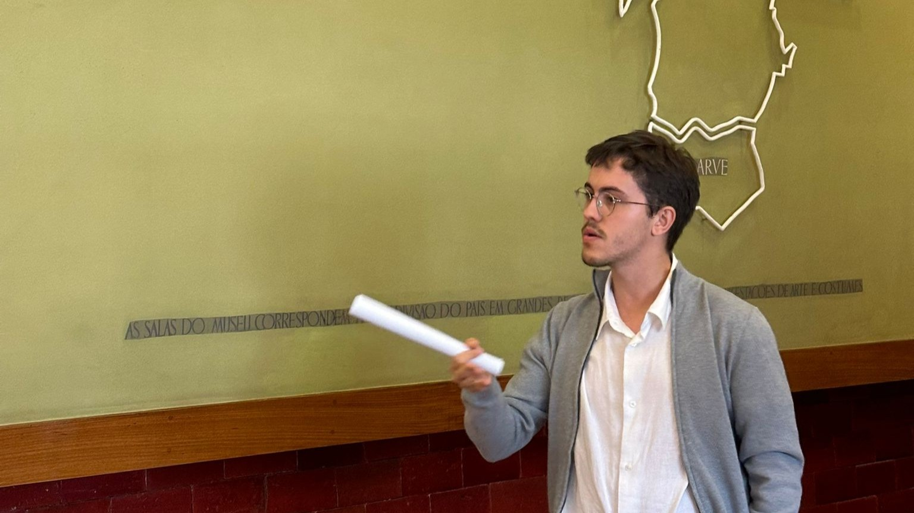
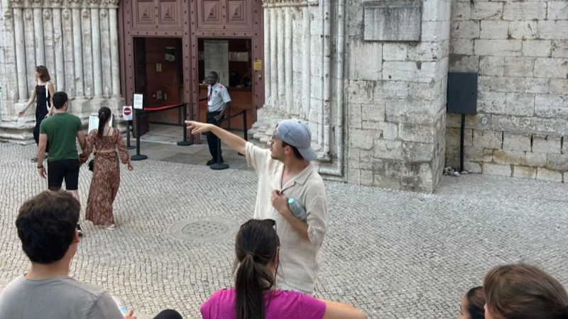
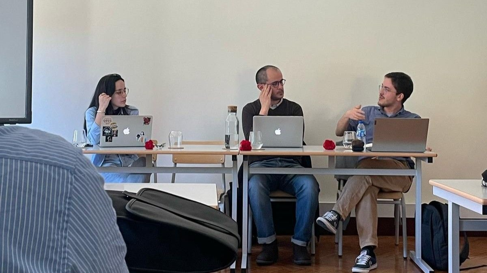
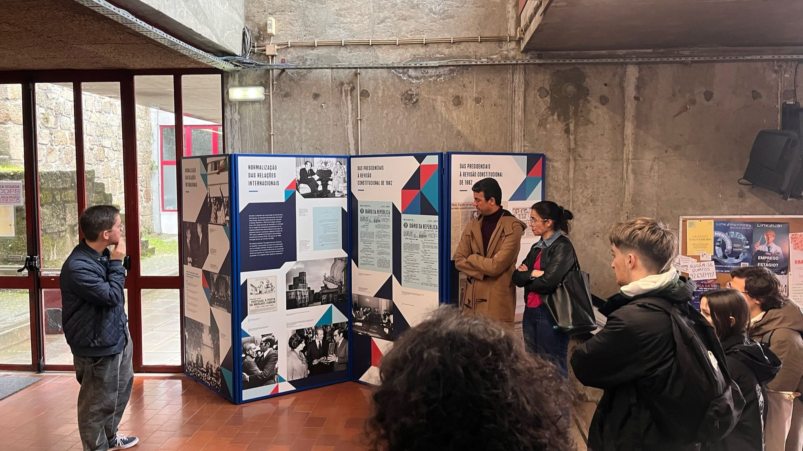
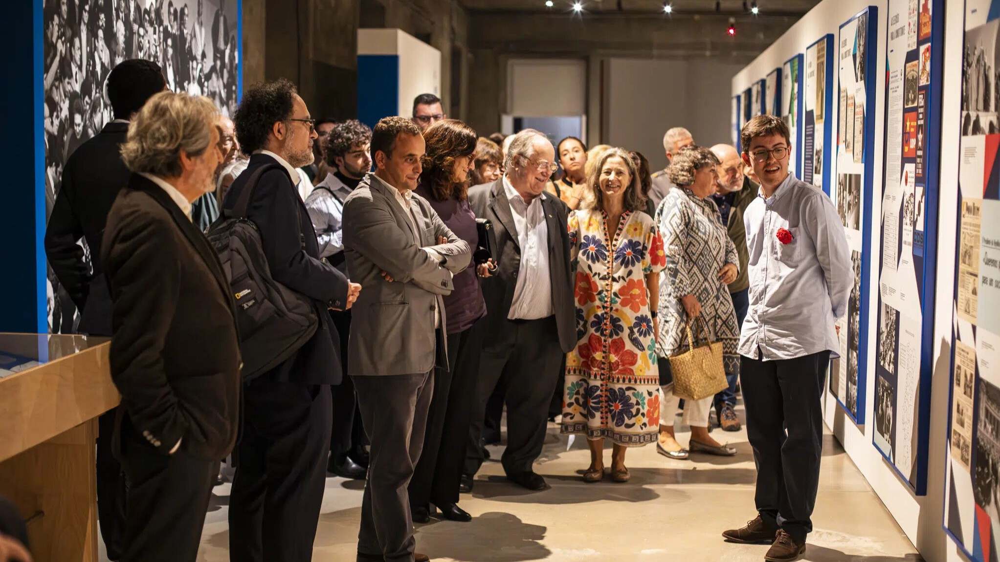

Society
This page gathers public-facing activities, guided visits, invited talks, and other forms of academic and cultural engagement.
Oct 2025 – Feb 2026
Several critical tours to the Popular Art Museum, questioning the major narratives about Portuguese conservative nationalism between the New State and Portuguese Democracy.

Oct 2025
Field class about “Lisbon, Resistance and Revolution: 1930–1976”, with the CIEE Lisbon students.

Apr 2025
Invited speaker in a talk on the Portuguese Revolution and Foreign Policy, organized by students of History and International Relations at the University of Porto.

Mar 2025 – Apr 2025
Two guided tours to the exhibition «Às armas ou às urnas - the People, the Armed Forces Movement and the Armed Forces: between revolution and democracy (1974–1982)» at the University of Beira Interior. One of them was integrated into the commemoration of the centenary of Mário Soares.

Jan 2025
Guided tours to the exhibition “Portugal-Spain: 50 years of democracy”, curated by Manuel Loff, at the Portuguese National Archive.
Sep 2024 – Feb 2025
Cultural and pedagogical dynamization of the exhibition «Às armas ou às urnas - the People, the Armed Forces Movement and the Armed Forces: between revolution and democracy (1974–1982)» in Lisbon, including more than 30 guided tours.
